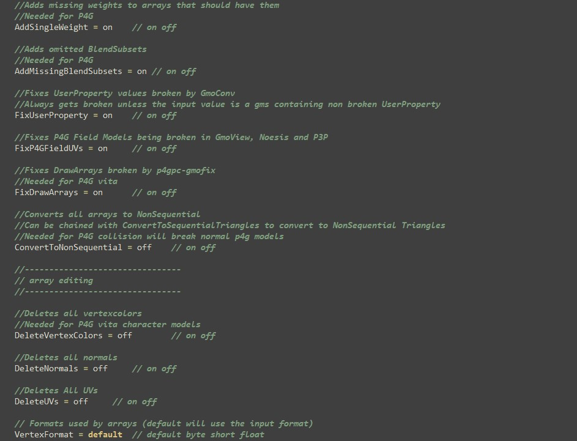

Key Features
Sadoaiya's easily configurable features include:
- Applying all changes necessary to make a model work in P4G PC
- Converting to a text format for easy editing
- Importing and extracting AMD files with precision
- Extracting and importing textures seamlessly
- Changing formats of arrays to meet specific requirements
- Heavily customizable with a comprehensive configuration file
Model Import Process
WARNING: This guide only covers making models work in P4G, not the complete model preparation process.
Prerequisites
- .NET 6.0 Runtime (required to run Sadoaiya)
- Sadoaiya (preconfigured for P4G PC by default)
- PSP Converter Tools (preconfigured for P4G PC)
Step-by-Step Guide
- Export your model as FBX (preferably 2009 ASCII format)
- Ensure your model is rotated 180 degrees on the Z axis!
- Convert your model to GMS using gmoconv.exe from PSP tools with:
gmoconv.exe {yourFBX} -S - Apply desired changes to the GMS file using a text editor
- Convert your GMS to GMO using:
gmoconv.exe {yourGMS} - Fix your model for P4G by either:
- Dragging and dropping it onto sadoaiya.exe
- Using command:
sadoaiya.exe {yourGMO} -Ato save as AMD
Get Started
Ready to enhance your Persona 4 Golden modding experience?
Download Sadoaiya